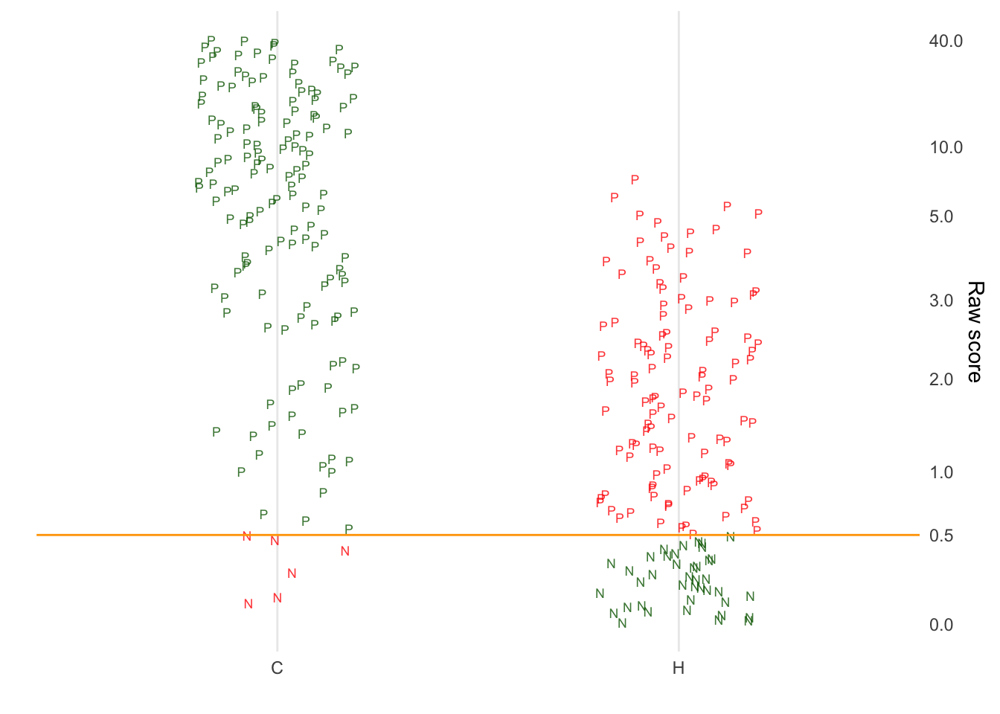

34 Constructing a classifier
\[\newcommand{\Ptest}{\mathbb{P}} \newcommand{\Ntest}{\mathbb{N}} \newcommand{\given}{\ |\!\!|\ }\]
There are many yes-or-no conditions. A patient has a disease or does not. A credit-card transaction is genuine or fraudulent.
But it is not always straightforward to figure out at the time the patient comes to the clinic or the credit-card transaction is made, whether the condition is yes or no. If we could wait, the condition might reveal itself: the patient gets critically ill or the credit-hard holder complains about an unauthorized charge. But we can’t wait. We want to treat the patient before he or she gets critically ill. We want to block the credit-card transaction before it is completed.
Instead of waiting, we measure whatever relevant variables we can when the patient arrives at the clinic or the credit-card transaction has been submitted for approval. For the patient, we might look at the concentration of specific markers for cancer in the blood. For the transaction, we might look at the shipping address to see if it matches the credit-card holder’s genuine address. Such variables may provide an indication, imperfect though it may be, of whether the condition is yes or no.
A classifier is a statistical model used to predict the unknown outcome of a yes-or-no situation from information that is already available. This Lesson concerns three closely related topics about classifiers: how we collect data for training the model, how we summarize the performance of the classifier, and how we “tune” the classifier.
Identifying cases
Consider this news report and note the time lag between collection of the dietary explanatory variables and the response variable—whether the patient developed pancreatic cancer.
Higher vitamin D intake has been associated with a significantly reduced risk of pancreatic cancer, according to a study released last week. Researchers combined data from two prospective studies that included 46,771 men ages 40 to 75 and 75,427 women ages 38 to 65. They identified 365 cases of pancreatic cancer over 16 years. Before their cancer was detected, subjects filled out dietary questionnaires, including information on vitamin supplements, and researchers calculated vitamin D intake. After statistically adjusting1 for age, smoking, level of physical activity, intake of calcium and retinol and other factors, the association between vitamin D intake and reduced risk of pancreatic cancer was still significant. Compared with people who consumed less than 150 units of vitamin D a day, those who consumed more than 600 units reduced their risk by 41 percent. - New York Times, 19 Sept. 2006, p. D6.
This was not an experiment; it was an observational study without any intervention to change anyone’s diet.
The training sample
In building a classifier, we have a similar situation. Perhaps we can perform the blood test today, but that gives us only the test result, not the subject’s true condition. We might have to wait years for that condition to reveal itself. Only at that point can we measure the performance of the classifier.
To picture the situation, let’s imagine many people enrolled in the study, some of whom have the condition and some who don’t. On Day 1 of the study, we test everyone and get raw score on a scale from 0 to 40. The results are shown in Figure 34.1. Each glyph is a person. The varying locations are meant to help us later on; for now, just think of them as representing where each person lives in the world. The different shapes of glyph—circle, square, triangle—are meant to remind you that people are different from one another in age, gender, risk-factors, etc.
Each person took a blood test. The raw result from that test is a score from 0 to 40. The distribution of scores is shown in the right panel of the figure. We also show the score in the world-plot; the higher the raw score, the more blue the glyph. On Day 1, it isn’t known who has the condition and who does not.
Having recorded the raw test results for each person, we wait. In the pancreatic cancer study, they waited 16 years for the cancer to reveal itself.
… waiting …
After the waiting period, we can add a new column to the original data; whether the person has the condition (C) or doesn’t (H).
Figure 34.2 shows the distribution of raw test scores for the C group and the H group. The scores are those recorded on Day 1, but after waiting to find out the patients’ conditions, we can subdivide them into those who have the condition (C) and those who don’t (H).
Applying a threshold
To finish the classifier, we need to identify a “threshold score.” Raw scores above this threshold will generate a \({\mathbb{P}}\) test; scores below the threshold generate a \({\mathbb{N}}\) test.
We can make a good guess at an appropriate threshold score from the presentation in the right panel of Figure 34.2. The objective in setting the threshold is to distinguish the C group from the H group. Setting the threshold at a score around 3 does a pretty good job.
It helps to give names to the two test results: \({\mathbb{P}}\) and \({\mathbb{N}}\). Anyone with a score above 3 has result \({\mathbb{P}}\), anyone with a score below 3 has an \({\mathbb{N}}\) result.
False positives and false negatives
NARRATE Figure 34.3 to point out the gray dots in the C group and the blue dots in the H group. These are errors. But there are two kinds of errors.
False-positive: blue dots in the H group. The “positive” refers to the \({\mathbb{P}}\) test result, the “false” simply means the test result was wrong.
False-negative: gray dots in the C group. The “negative” refers to the \({\mathbb{N}}\) result. Again, the “false” means simply that the test result is out of line with the actual condition of the person.
In the training sample shown in Figure 34.3, there are 300 people altogether and 17 false-negatives. This gives a false-negative rate of about 6%. Similarly there are 30 false-negatives, a false-positive rate of 10%.
Feature engineering: selling dog food
Naturally, the objective when building a classifier is to avoid errors. One way to avoid errors is by careful “feature engineering.” Here, “features” refers to the inputs to the classifier model. Often, the designer of the classifier has multiple variables (“features”) to work with. (See example.) Choosing a good set of features can be the difference between a successful classifier and one that makes so many mistakes as to be useless.
We will use the name “Bullseye” to refer to a major, national, big-box retailing chain which sells, among many other products, dog food. Sales are largely determined by customer habits; people tend to buy where and what they have previously bought. There are many places to buy dog food, for instance pet supermarkets and grocery stores.
One strategy for increasing sales involves discount coupons. A steep discount provides a consumer incentive to try something new and, maybe, leads to consumers forming new habits. But, from a sales perspective, there is little point in providing discounts to people who already have the habit of buying dog food from the retailer. Instead, it is most efficient to provide the discount only to people who don’t yet have that habit
The Bullseye marketing staff decided to build a classifier to identify pet owners who already shop at Bullseye but do not purchase dog food there. The data available, from Bullseye’s “loyalty” program, consisted of individual customers’ past purchases of the tens of thousands of products sold at Bullseye.
Which of these many products to use as indicators of a customer’s potential to switch to Bullseye’s dog food? This is where feature engineering comes in. Searching through Bullseye’s huge database, the feature engineers identified that customers who buy dog food also buy carpet cleaner. But many people buy carpet cleaner who don’t buy dog food. The engineers searched for purchases might distinguish dog owners from other users of carpet cleaner.
The feature engineers’ conclusion: Send dog-food coupons to people who buy carpet cleaner but do not buy diapers. Admittedly, this will leave out the people who have both dogs and babies: these are false negatives. It will also lead to coupons being sent to petless, spill-prone people whose children, if any, have moved beyond diapers: false-positives.
Threshold, sensitivity and specificity
In Figure 34.3 the threshold between \({\mathbb{P}}\) and \({\mathbb{N}}\) is set at a score of 3. That might have been a good choice, but it pays to take a more careful look.
That graph is hard to read because the scores have a very long-tailed distribution; the large majority of scores are below 2 but the scores go up to 40. To make it easier to compare scores between the C and H groups, Figure 34.4 shows the scores on a nonlinear axis. Each score is marked as a letter: “P” means \({\mathbb{P}}\), “N” means \({\mathbb{N}}\). False results are colored red.
## PNplot(threshold=3)
knitr::include_graphics("www/PN-threshold1.png")Moving the threshold up would reduce the number of false-positives. At the same time, the larger threshold would increase the number of false-negatives. ?fig-two-thresholds shows what the situation would be if the threshold had been set at, say, 10 or 0.5.

By setting the threshold larger, the number of false-negatives (red Ns in ?fig-two-thresholds) increases, but the number of false-positives (red Ps) goes down. Setting the threshold lower reduces the number of false-negatives but increases the number of false-positives.
This trade-off between the number of false-positives and the number of false-negatives is characteristic of classifiers.
Figure 34.7 shows the overall pattern for false results versus threshold. At a threshold of 0, all test results are \({\mathbb{P}}\). Hence, none of the C group results are false; if there are no \({\mathbb{N}}\) results, there cannot be any false-negatives. On the other hand, all of the H group are false-positives.
Increasing the threshold changes the results. At a threshold of 1, many of the H group—about 50%—are being correctly classified as \({\mathbb{N}}\). Unfortunately, the higher threshold introduces some negative results for the C group. So the fraction of correct results in the C group goes down to about 90%. This pattern continues: raising the threshold improves the fraction correct in the H group and lowers the fraction correct in the C group.
There are two names given to the fraction of correct classifications, depending on whether one is looking at the C group or the H group. The fraction correct in the C group is called the “sensitivity” of the test. The fraction correct in the H group is the “specificity” of the test.
The sensitivity and the specificity, taken together, summarize the error rates of the classifier. Note that there are two error rates: one for the C group and another for the H group. Figure 34.7 shows that, depending on the threshold used, the sensitivity and specificity can be very different from one another.
Ideally, both the sensitivity and specificity would be 100%. In practice, high sensitivity means lower specificity and vice versa.
Sensitivity and specificity will be particularly important in Lesson 35 when we take into consideration the prevalence, that is, the fraction of the population with condition C